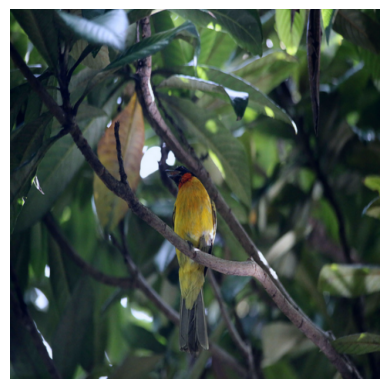
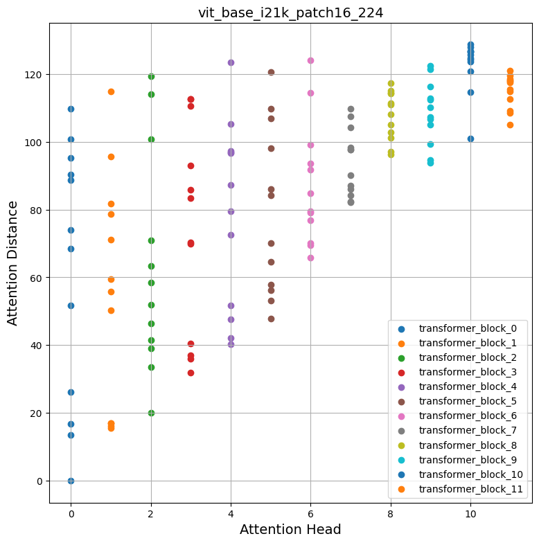
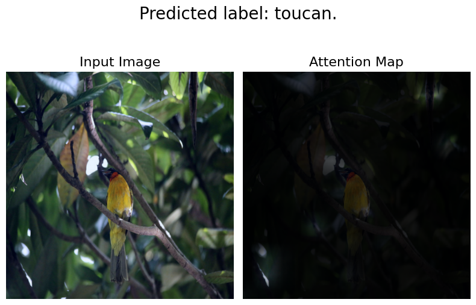
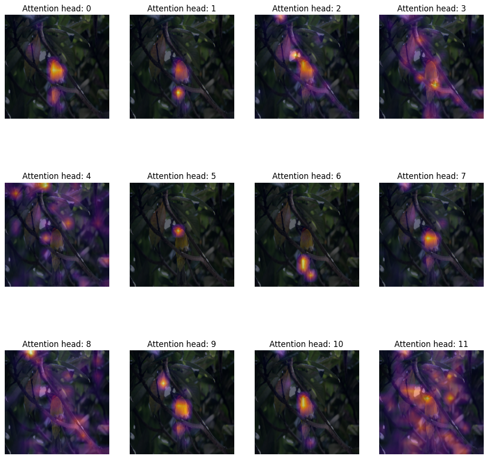
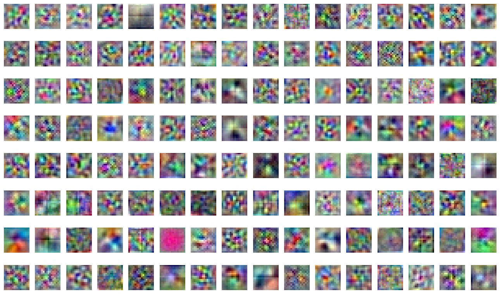
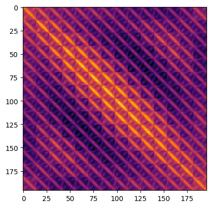

Investigating Vision Transformer representations
Authors: Aritra Roy Gosthipaty, Sayak Paul (equal contribution)
Date created: 2022/04/12
Last modified: 2023/11/20
Description: Looking into the representations learned by different Vision Transformers variants.

Introduction
In this example, we look into the representations learned by different Vision Transformer (ViT) models. Our main goal with this example is to provide insights into what empowers ViTs to learn from image data. In particular, the example discusses implementations of a few different ViT analysis tools.
Note: when we say "Vision Transformer", we refer to a computer vision architecture that involves Transformer blocks (Vaswani et al.) and not necessarily the original Vision Transformer model (Dosovitskiy et al.).
Models considered
Since the inception of the original Vision Transformer, the computer vision community has seen a number of different ViT variants improving upon the original in various ways: training improvements, architecture improvements, and so on. In this example, we consider the following ViT model families:
- ViTs trained using supervised pretraining with the ImageNet-1k and ImageNet-21k datasets (Dosovitskiy et al.)
- ViTs trained using supervised pretraining but only with the ImageNet-1k dataset with more regularization and distillation (Touvron et al.) (DeiT).
- ViTs trained using self-supervised pretraining (Caron et al.) (DINO).
Since the pretrained models are not implemented in Keras, we first implemented them as faithfully as possible. We then populated them with the official pretrained parameters. Finally, we evaluated our implementations on the ImageNet-1k validation set to ensure the evaluation numbers were matching with the original implementations. The details of our implementations are available in this repository.
To keep the example concise, we won't exhaustively pair each model with the analysis methods. We'll provide notes in the respective sections so that you can pick up the pieces.
To run this example on Google Colab, we need to update the gdown library like so:
pip install -U gdown -q
Imports
import os
os.environ["KERAS_BACKEND"] = "tensorflow"
import zipfile
from io import BytesIO
import cv2
import matplotlib.pyplot as plt
import numpy as np
import requests
from PIL import Image
from sklearn.preprocessing import MinMaxScaler
import keras
from keras import ops
Constants
RESOLUTION = 224
PATCH_SIZE = 16
GITHUB_RELEASE = "https://github.com/sayakpaul/probing-vits/releases/download/v1.0.0/probing_vits.zip"
FNAME = "probing_vits.zip"
MODELS_ZIP = {
"vit_dino_base16": "Probing_ViTs/vit_dino_base16.zip",
"vit_b16_patch16_224": "Probing_ViTs/vit_b16_patch16_224.zip",
"vit_b16_patch16_224-i1k_pretrained": "Probing_ViTs/vit_b16_patch16_224-i1k_pretrained.zip",
}
Data utilities
For the original ViT models, the input images need to be scaled to the range [-1, 1]. For
the other model families mentioned at the beginning, we need to normalize the images with
channel-wise mean and standard deviation of the ImageNet-1k training set.
crop_layer = keras.layers.CenterCrop(RESOLUTION, RESOLUTION)
norm_layer = keras.layers.Normalization(
mean=[0.485 * 255, 0.456 * 255, 0.406 * 255],
variance=[(0.229 * 255) ** 2, (0.224 * 255) ** 2, (0.225 * 255) ** 2],
)
rescale_layer = keras.layers.Rescaling(scale=1.0 / 127.5, offset=-1)
def preprocess_image(image, model_type, size=RESOLUTION):
# Turn the image into a numpy array and add batch dim.
image = np.array(image)
image = ops.expand_dims(image, 0)
# If model type is vit rescale the image to [-1, 1].
if model_type == "original_vit":
image = rescale_layer(image)
# Resize the image using bicubic interpolation.
resize_size = int((256 / 224) * size)
image = ops.image.resize(image, (resize_size, resize_size), interpolation="bicubic")
# Crop the image.
image = crop_layer(image)
# If model type is DeiT or DINO normalize the image.
if model_type != "original_vit":
image = norm_layer(image)
return ops.convert_to_numpy(image)
def load_image_from_url(url, model_type):
# Credit: Willi Gierke
response = requests.get(url)
image = Image.open(BytesIO(response.content))
preprocessed_image = preprocess_image(image, model_type)
return image, preprocessed_image
Load a test image and display it
# ImageNet-1k label mapping file and load it.
mapping_file = keras.utils.get_file(
origin="https://storage.googleapis.com/bit_models/ilsvrc2012_wordnet_lemmas.txt"
)
with open(mapping_file, "r") as f:
lines = f.readlines()
imagenet_int_to_str = [line.rstrip() for line in lines]
img_url = "https://dl.fbaipublicfiles.com/dino/img.png"
image, preprocessed_image = load_image_from_url(img_url, model_type="original_vit")
plt.imshow(image)
plt.axis("off")
plt.show()

Load a model
zip_path = keras.utils.get_file(
fname=FNAME,
origin=GITHUB_RELEASE,
)
with zipfile.ZipFile(zip_path, "r") as zip_ref:
zip_ref.extractall("./")
os.rename("Probing ViTs", "Probing_ViTs")
def load_model(model_path: str) -> keras.Model:
with zipfile.ZipFile(model_path, "r") as zip_ref:
zip_ref.extractall("Probing_ViTs/")
model_name = model_path.split(".")[0]
inputs = keras.Input((RESOLUTION, RESOLUTION, 3))
model = keras.layers.TFSMLayer(model_name, call_endpoint="serving_default")
outputs = model(inputs, training=False)
return keras.Model(inputs, outputs=outputs)
vit_base_i21k_patch16_224 = load_model(MODELS_ZIP["vit_b16_patch16_224-i1k_pretrained"])
print("Model loaded.")
Model loaded.
More about the model:
This model was pretrained on the ImageNet-21k dataset and was then fine-tuned on the ImageNet-1k dataset. To learn more about how we developed this model in TensorFlow (with pretrained weights from this source) refer to this notebook.
Running regular inference with the model
We now run inference with the loaded model on our test image.
def split_prediction_and_attention_scores(outputs):
predictions = outputs["output_1"]
attention_score_dict = {}
for key, value in outputs.items():
if key.startswith("output_2_"):
attention_score_dict[key[len("output_2_") :]] = value
return predictions, attention_score_dict
predictions, attention_score_dict = split_prediction_and_attention_scores(
vit_base_i21k_patch16_224.predict(preprocessed_image)
)
predicted_label = imagenet_int_to_str[int(np.argmax(predictions))]
print(predicted_label)
1/1 ━━━━━━━━━━━━━━━━━━━━ 5s 5s/step
toucan
WARNING: All log messages before absl::InitializeLog() is called are written to STDERR
I0000 00:00:1700526824.965785 75784 device_compiler.h:187] Compiled cluster using XLA! This line is logged at most once for the lifetime of the process.
attention_score_dict contains the attention scores (softmaxed outputs) from each
attention head of each Transformer block.
Method I: Mean attention distance
Dosovitskiy et al. and Raghu et al. use a measure called "mean attention distance" from each attention head of different Transformer blocks to understand how local and global information flows into Vision Transformers.
Mean attention distance is defined as the distance between query tokens and the other tokens times attention weights. So, for a single image
- we take individual patches (tokens) extracted from the image,
- calculate their geometric distance, and
- multiply that with the attention scores.
Attention scores are calculated here after forward passing the image in inference mode through the network. The following figure may help you understand the process a little bit better.

This animation is created by Ritwik Raha.
def compute_distance_matrix(patch_size, num_patches, length):
distance_matrix = np.zeros((num_patches, num_patches))
for i in range(num_patches):
for j in range(num_patches):
if i == j: # zero distance
continue
xi, yi = (int(i / length)), (i % length)
xj, yj = (int(j / length)), (j % length)
distance_matrix[i, j] = patch_size * np.linalg.norm([xi - xj, yi - yj])
return distance_matrix
def compute_mean_attention_dist(patch_size, attention_weights, model_type):
num_cls_tokens = 2 if "distilled" in model_type else 1
# The attention_weights shape = (batch, num_heads, num_patches, num_patches)
attention_weights = attention_weights[
..., num_cls_tokens:, num_cls_tokens:
] # Removing the CLS token
num_patches = attention_weights.shape[-1]
length = int(np.sqrt(num_patches))
assert length**2 == num_patches, "Num patches is not perfect square"
distance_matrix = compute_distance_matrix(patch_size, num_patches, length)
h, w = distance_matrix.shape
distance_matrix = distance_matrix.reshape((1, 1, h, w))
# The attention_weights along the last axis adds to 1
# this is due to the fact that they are softmax of the raw logits
# summation of the (attention_weights * distance_matrix)
# should result in an average distance per token.
mean_distances = attention_weights * distance_matrix
mean_distances = np.sum(
mean_distances, axis=-1
) # Sum along last axis to get average distance per token
mean_distances = np.mean(
mean_distances, axis=-1
) # Now average across all the tokens
return mean_distances
Thanks to Simon Kornblith from Google who helped us with this code snippet. It can be found here. Let's now use these utilities to generate a plot of attention distances with our loaded model and test image.
# Build the mean distances for every Transformer block.
mean_distances = {
f"{name}_mean_dist": compute_mean_attention_dist(
patch_size=PATCH_SIZE,
attention_weights=attention_weight,
model_type="original_vit",
)
for name, attention_weight in attention_score_dict.items()
}
# Get the number of heads from the mean distance output.
num_heads = mean_distances["transformer_block_0_att_mean_dist"].shape[-1]
# Print the shapes
print(f"Num Heads: {num_heads}.")
plt.figure(figsize=(9, 9))
for idx in range(len(mean_distances)):
mean_distance = mean_distances[f"transformer_block_{idx}_att_mean_dist"]
x = [idx] * num_heads
y = mean_distance[0, :]
plt.scatter(x=x, y=y, label=f"transformer_block_{idx}")
plt.legend(loc="lower right")
plt.xlabel("Attention Head", fontsize=14)
plt.ylabel("Attention Distance", fontsize=14)
plt.title("vit_base_i21k_patch16_224", fontsize=14)
plt.grid()
plt.show()
Num Heads: 12.

Inspecting the plots
How does self-attention span across the input space? Do they attend input regions locally or globally?
The promise of self-attention is to enable the learning of contextual dependencies so that a model can attend to the regions of inputs which are the most salient w.r.t the objective. From the above plots we can notice that different attention heads yield different attention distances suggesting they use both local and global information from an image. But as we go deeper in the Transformer blocks the heads tend to focus more on global aggregate information.
Inspired by Raghu et al. we computed mean attention distances over 1000 images randomly taken from the ImageNet-1k validation set and we repeated the process for all the models mentioned at the beginning. Intrestingly, we notice the following:
- Pretraining with a larger dataset helps with more global attention spans:
| Pretrained on ImageNet-21k Fine-tuned on ImageNet-1k |
Pretrained on ImageNet-1k |
|---|---|
- When distilled from a CNN ViTs tend to have less global attention spans:
| No distillation (ViT B-16 from DeiT) | Distilled ViT B-16 from DeiT |
|---|---|
To reproduce these plots, please refer to this notebook.
Method II: Attention Rollout
Abnar et al. introduce "Attention rollout" for quantifying how information flow through self-attention layers of Transformer blocks. Original ViT authors use this method to investigate the learned representations, stating:
Briefly, we averaged attention weights of ViTL/16 across all heads and then recursively multiplied the weight matrices of all layers. This accounts for the mixing of attention across tokens through all layers.
We used this notebook and modified the attention rollout code from it for compatibility with our models.
def attention_rollout_map(image, attention_score_dict, model_type):
num_cls_tokens = 2 if "distilled" in model_type else 1
# Stack the individual attention matrices from individual Transformer blocks.
attn_mat = ops.stack([attention_score_dict[k] for k in attention_score_dict.keys()])
attn_mat = ops.squeeze(attn_mat, axis=1)
# Average the attention weights across all heads.
attn_mat = ops.mean(attn_mat, axis=1)
# To account for residual connections, we add an identity matrix to the
# attention matrix and re-normalize the weights.
residual_attn = ops.eye(attn_mat.shape[1])
aug_attn_mat = attn_mat + residual_attn
aug_attn_mat = aug_attn_mat / ops.sum(aug_attn_mat, axis=-1)[..., None]
aug_attn_mat = ops.convert_to_numpy(aug_attn_mat)
# Recursively multiply the weight matrices.
joint_attentions = np.zeros(aug_attn_mat.shape)
joint_attentions[0] = aug_attn_mat[0]
for n in range(1, aug_attn_mat.shape[0]):
joint_attentions[n] = np.matmul(aug_attn_mat[n], joint_attentions[n - 1])
# Attention from the output token to the input space.
v = joint_attentions[-1]
grid_size = int(np.sqrt(aug_attn_mat.shape[-1]))
mask = v[0, num_cls_tokens:].reshape(grid_size, grid_size)
mask = cv2.resize(mask / mask.max(), image.size)[..., np.newaxis]
result = (mask * image).astype("uint8")
return result
Let's now use these utilities to generate an attention plot based on our previous results from the "Running regular inference with the model" section. Following are the links to download each individual model:
- Original ViT model (pretrained on ImageNet-21k)
- Original ViT model (pretrained on ImageNet-1k)
- DINO model (pretrained on ImageNet-1k)
- DeiT models (pretrained on ImageNet-1k including distilled and non-distilled ones)
attn_rollout_result = attention_rollout_map(
image, attention_score_dict, model_type="original_vit"
)
fig, (ax1, ax2) = plt.subplots(ncols=2, figsize=(8, 10))
fig.suptitle(f"Predicted label: {predicted_label}.", fontsize=20)
_ = ax1.imshow(image)
_ = ax2.imshow(attn_rollout_result)
ax1.set_title("Input Image", fontsize=16)
ax2.set_title("Attention Map", fontsize=16)
ax1.axis("off")
ax2.axis("off")
fig.tight_layout()
fig.subplots_adjust(top=1.35)
fig.show()

Inspecting the plots
How can we quanitfy the information flow that propagates through the attention layers?
We notice that the model is able to focus its attention on the salient parts of the input image. We encourage you to apply this method to the other models we mentioned and compare the results. The attention rollout plots will differ according to the tasks and augmentation the model was trained with. We observe that DeiT has the best rollout plot, likely due to its augmentation regime.
Method III: Attention heatmaps
A simple yet useful way to probe into the representation of a Vision Transformer is to visualise the attention maps overlayed on the input images. This helps form an intuition about what the model attends to. We use the DINO model for this purpose, because it yields better attention heatmaps.
# Load the model.
vit_dino_base16 = load_model(MODELS_ZIP["vit_dino_base16"])
print("Model loaded.")
# Preprocess the same image but with normlization.
img_url = "https://dl.fbaipublicfiles.com/dino/img.png"
image, preprocessed_image = load_image_from_url(img_url, model_type="dino")
# Grab the predictions.
predictions, attention_score_dict = split_prediction_and_attention_scores(
vit_dino_base16.predict(preprocessed_image)
)
Model loaded.
1/1 ━━━━━━━━━━━━━━━━━━━━ 4s 4s/step
A Transformer block consists of multiple heads. Each head in a Transformer block projects the input data to different sub-spaces. This helps each individual head to attend to different parts of the image. Therefore, it makes sense to visualize each attention head map seperately, to make sense of what each heads looks at.
Notes:
- The following code has been copy-modified from the original DINO codebase.
- Here we grab the attention maps of the last Transformer block.
- DINO was pretrained using a self-supervised objective.
def attention_heatmap(attention_score_dict, image, model_type="dino"):
num_tokens = 2 if "distilled" in model_type else 1
# Sort the Transformer blocks in order of their depth.
attention_score_list = list(attention_score_dict.keys())
attention_score_list.sort(key=lambda x: int(x.split("_")[-2]), reverse=True)
# Process the attention maps for overlay.
w_featmap = image.shape[2] // PATCH_SIZE
h_featmap = image.shape[1] // PATCH_SIZE
attention_scores = attention_score_dict[attention_score_list[0]]
# Taking the representations from CLS token.
attentions = attention_scores[0, :, 0, num_tokens:].reshape(num_heads, -1)
# Reshape the attention scores to resemble mini patches.
attentions = attentions.reshape(num_heads, w_featmap, h_featmap)
attentions = attentions.transpose((1, 2, 0))
# Resize the attention patches to 224x224 (224: 14x16).
attentions = ops.image.resize(
attentions, size=(h_featmap * PATCH_SIZE, w_featmap * PATCH_SIZE)
)
return attentions
We can use the same image we used for inference with DINO and the attention_score_dict
we extracted from the results.
# De-normalize the image for visual clarity.
in1k_mean = np.array([0.485 * 255, 0.456 * 255, 0.406 * 255])
in1k_std = np.array([0.229 * 255, 0.224 * 255, 0.225 * 255])
preprocessed_img_orig = (preprocessed_image * in1k_std) + in1k_mean
preprocessed_img_orig = preprocessed_img_orig / 255.0
preprocessed_img_orig = ops.convert_to_numpy(ops.clip(preprocessed_img_orig, 0.0, 1.0))
# Generate the attention heatmaps.
attentions = attention_heatmap(attention_score_dict, preprocessed_img_orig)
# Plot the maps.
fig, axes = plt.subplots(nrows=3, ncols=4, figsize=(13, 13))
img_count = 0
for i in range(3):
for j in range(4):
if img_count < len(attentions):
axes[i, j].imshow(preprocessed_img_orig[0])
axes[i, j].imshow(attentions[..., img_count], cmap="inferno", alpha=0.6)
axes[i, j].title.set_text(f"Attention head: {img_count}")
axes[i, j].axis("off")
img_count += 1

Inspecting the plots
How can we qualitatively evaluate the attention weights?
The attention weights of a Transformer block are computed between the key and the query. The weights quantifies how important is the key to the query. In the ViTs the key and the query comes from the same image, hence the weights determine which part of the image is important.
Plotting the attention weigths overlayed on the image gives us a great intuition about the parts of the image that are important to the Transformer. This plot qualitatively evaluates the purpose of the attention weights.
Method IV: Visualizing the learned projection filters
After extracting non-overlapping patches, ViTs flatten those patches across their saptial dimensions, and then linearly project them. One might wonder, how do these projections look like? Below, we take the ViT B-16 model and visualize its learned projections.
def extract_weights(model, name):
for variable in model.weights:
if variable.name.startswith(name):
return variable.numpy()
# Extract the projections.
projections = extract_weights(vit_base_i21k_patch16_224, "conv_projection/kernel")
projection_dim = projections.shape[-1]
patch_h, patch_w, patch_channels = projections.shape[:-1]
# Scale the projections.
scaled_projections = MinMaxScaler().fit_transform(
projections.reshape(-1, projection_dim)
)
# Reshape the scaled projections so that the leading
# three dimensions resemble an image.
scaled_projections = scaled_projections.reshape(patch_h, patch_w, patch_channels, -1)
# Visualize the first 128 filters of the learned
# projections.
fig, axes = plt.subplots(nrows=8, ncols=16, figsize=(13, 8))
img_count = 0
limit = 128
for i in range(8):
for j in range(16):
if img_count < limit:
axes[i, j].imshow(scaled_projections[..., img_count])
axes[i, j].axis("off")
img_count += 1
fig.tight_layout()
WARNING:matplotlib.image:Clipping input data to the valid range for imshow with RGB data ([0..1] for floats or [0..255] for integers).
WARNING:matplotlib.image:Clipping input data to the valid range for imshow with RGB data ([0..1] for floats or [0..255] for integers).
WARNING:matplotlib.image:Clipping input data to the valid range for imshow with RGB data ([0..1] for floats or [0..255] for integers).
WARNING:matplotlib.image:Clipping input data to the valid range for imshow with RGB data ([0..1] for floats or [0..255] for integers).
WARNING:matplotlib.image:Clipping input data to the valid range for imshow with RGB data ([0..1] for floats or [0..255] for integers).
WARNING:matplotlib.image:Clipping input data to the valid range for imshow with RGB data ([0..1] for floats or [0..255] for integers).

Inspecting the plots
What do the projection filters learn?
When visualized, the kernels of a convolutional neural network show the pattern that they look for in an image. This could be circles, sometimes lines – when combined together (in later stage of a ConvNet), the filters transform into more complex shapes. We have found a stark similarity between such ConvNet kernels and the projection filters of a ViT.
Method V: Visualizing the positional emebddings
Transformers are permutation-invariant. This means that do not take into account the spatial position of the input tokens. To overcome this limitation, we add positional information to the input tokens.
The positional information can be in the form of leaned positional embeddings or handcrafted constant embeddings. In our case, all the three variants of ViTs feature learned positional embeddings.
In this section, we visualize the similarities between the learned positional embeddings with itself. Below, we take the ViT B-16 model and visualize the similarity of the positional embeddings by taking their dot-product.
position_embeddings = extract_weights(vit_base_i21k_patch16_224, "pos_embedding")
# Discard the batch dimension and the position embeddings of the
# cls token.
position_embeddings = position_embeddings.squeeze()[1:, ...]
similarity = position_embeddings @ position_embeddings.T
plt.imshow(similarity, cmap="inferno")
plt.show()

Inspecting the plots
What do the positional embeddings tell us?
The plot has a distinctive diagonal pattern. The main diagonal is the brightest signifying that a position is the most similar to itself. An interesting pattern to look out for is the repeating diagonals. The repeating pattern portrays a sinusoidal function which is close in essence to what was proposed by Vaswani et. al. as a hand-crafted feature.
Notes
-
DINO extended the attention heatmap generation process to videos. We also applied our DINO implementation on a series of videos and obtained similar results. Here's one such video of attention heatmaps:

- Raghu et al. use an array of techniques to investigate the representations learned by ViTs and make comparisons with that of ResNets. We strongly recommend reading their work.
- To author this example, we developed this repository to guide our readers so that they can easily reproduce the experiments and extend them.
- Another repository that you may find interesting in this regard is
vit-explain.
- One can also plot the attention rollout and attention heat maps with custom images using our Hugging Face spaces.
| Attention Heat Maps | Attention Rollout |
|---|---|